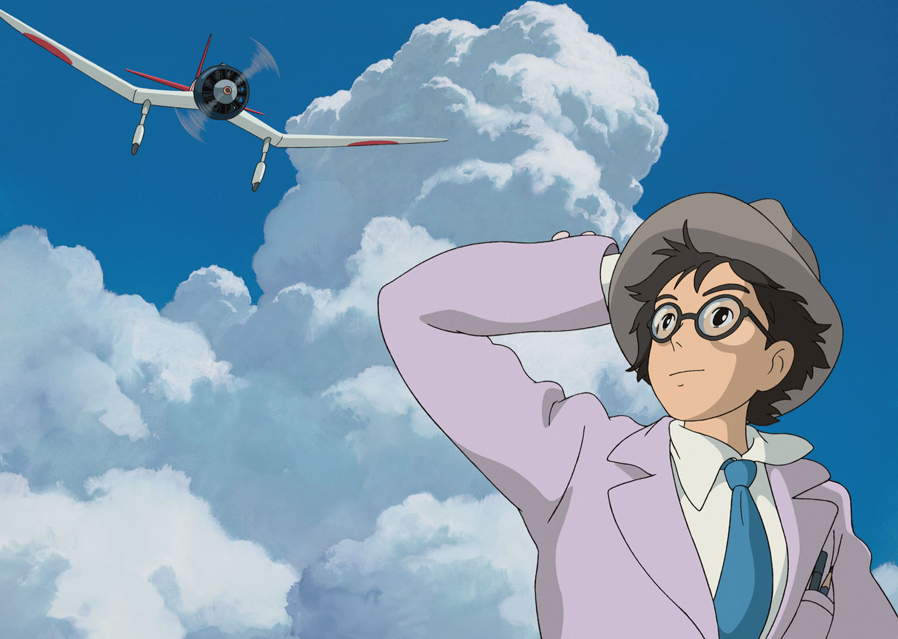
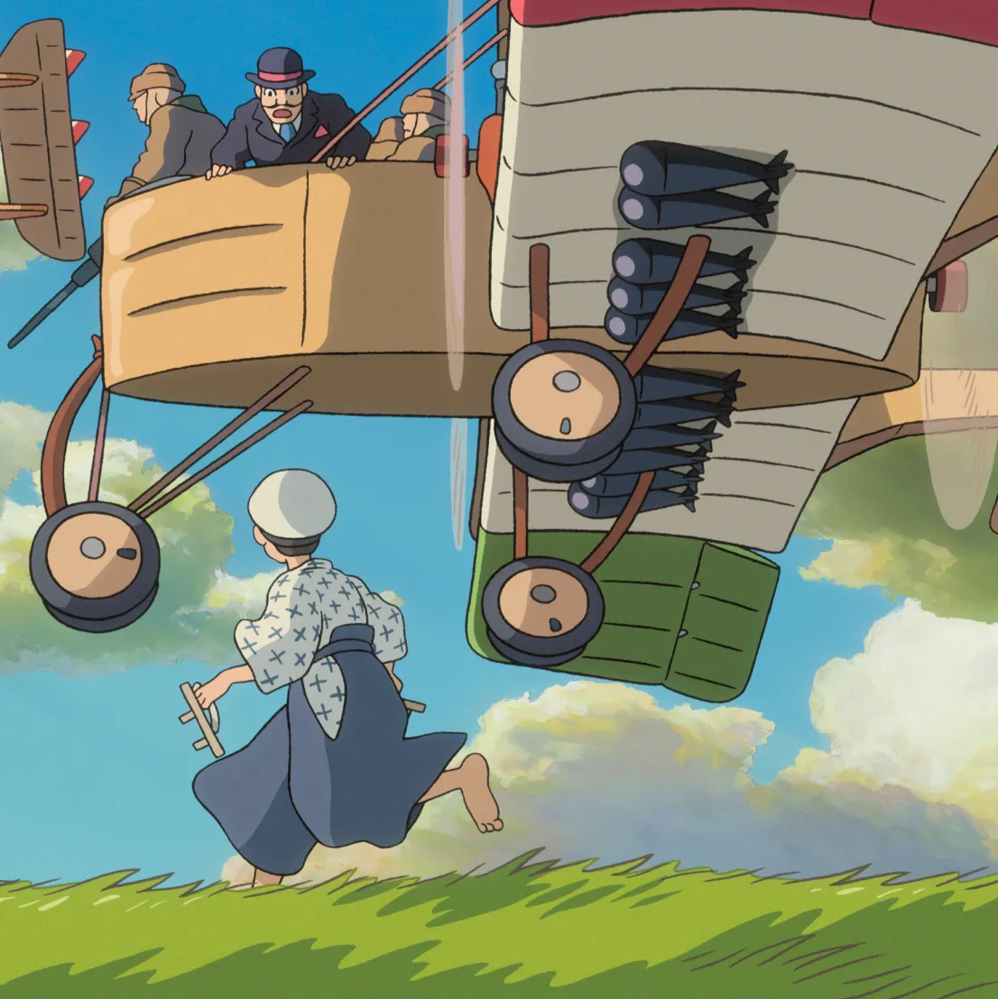

The Wind Rises is a Studio Ghibli movie about Jiro Horikoshi a passionate Japanese aviation engineer, whose storied career includes the creation of the A6M World War II fighter plane.
 The Wind Rises was released July 20th 2013. The Wind Rises was the 11th feature film that Hayao Miyazaki directed, and the 14th feature film that he wrote.
The wind Rises was the newest film done by Hayo Miyazaki until the 2023 release of The Boy and the Heron.